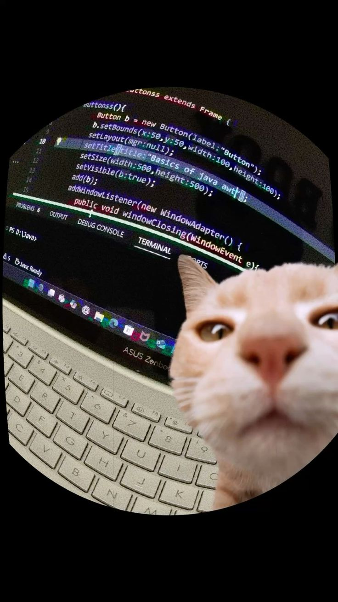

Jonatan Henrique Estevam Moreira
Aluno de Análise e Desenvolvimento de Sistemas - UFBRA
Sobre Mim
Estou cursando Análise e Desenvolvimento de Sistemas na UFBRA, com forte interesse na área de tecnologia e desenvolvimento de software. Atualmente dedico grande parte do meu tempo ao estudo de programação, com foco principal em C# e desenvolvimento de APIs utilizando ASP.NET. Ao longo da minha jornada de aprendizado, venho desenvolvendo projetos práticos, incluindo APIs conectadas a banco de dados e aplicações voltadas para resolução de problemas reais. Tenho interesse em aprofundar meus conhecimentos em arquitetura de software, orientação a objetos e boas práticas de desenvolvimento. Além da programação, possuo curiosidade por tecnologia em geral, hardware e resolução de problemas relacionados a computadores e sistemas. Busco constantemente evoluir minhas habilidades técnicas e adquirir experiência prática no mercado de tecnologia. Meu objetivo profissional é ingressar na área de desenvolvimento de software, onde possa aplicar meus conhecimentos, aprender com profissionais mais experientes e continuar evoluindo como desenvolvedor.
Habilidades
Projetos
API de Pizzaria
Uma API REST desenvolvida por mim para gerenciar uma pizzaria, conectada a um banco de dados.
Contato
Conecte-se comigo:
GitHub LinkedIn